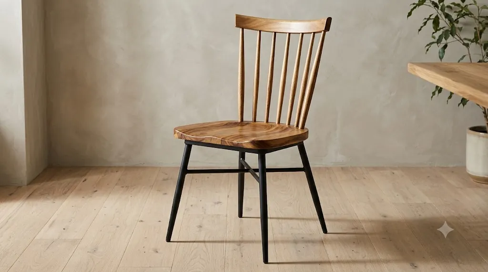

AA-ST-462 · Cat 47
Mid-Century Wishbone Counter Stool with Hardwood Seat
Handcrafted Mid-Century Modern hospitality seating piece engineered for West Elm, CB2 wholesale programs.
$36.00 – $48.00 FOB Mundra · per unit · MOQ 25 Pcs
| Material & construction | Curved iron Y-back frame with woven paper cord or solid timber sculpted saddle |
|---|---|
| Dimensions | 20" x 20" x 36" H (26" seat) |
| Carton volume | 0.090 CBM / unit |
| Minimum order | 25 Pcs |
| Lead time | 45–60 Days (FOB Mundra) |
| Western retail benchmark | $195 – $280 |
| Style | Mid-Century Modern |
| Indicative HS heading | 9403.60 — Other wooden furniture |
| Typical buyers | West Elm, CB2 |
Indicative HS heading only — your customs broker confirms final classification. Kiln-dried 8–10% moisture, ISPM-15 dunnage, VRIKSH / Lacey / EUDR paperwork on request.